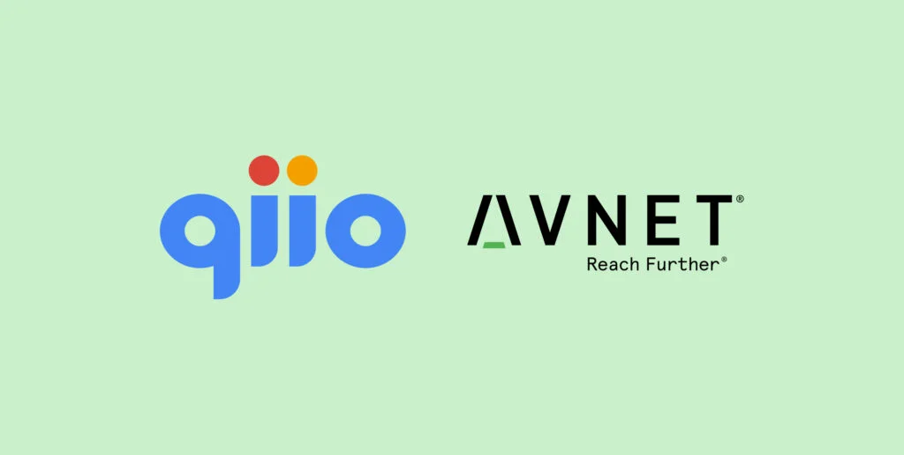

Avnet, a global technology solutions provider and qiio, a Swiss provider of
proven leading edge cellular IoT solutions, today announced that they have entered a global strategic
distribution partnership to accelerate and scale IoT deployments worldwide, and provide customers with
seamless, secure and global cellular connectivity from the edge to the cloud. In addition, qiio has joined
the Avnet IoTConnect™ Partner Program, a part of Avnet’s IoTConnect Solutions Suite.
Phoenix AZ, U.S.A and Zurich, Switzerland, March 3, 2021, Avnet (Nasdaq: AVT) and qiio have entered into a
distribution partnership, enabling Avnet’s global customer base to access qiio’s edge devices and
connectivity services. Through a single user interface in Avnet’s enterprise grade IoTConnect™ Platform
customers can seamlessly and securely connect qiio devices to the platform, analyze the data and derive
meaningful insights. Avnet’s proven expertise in supply chain management, combined with its market
differentiating IoTConnect Platform will enable delivering connected experiences to customers using qiio
devices.
qiio offers proven solutions to connect global assets quickly, securely and in a cost-effective manner. qiio
has combined robust edge technology based on Microsoft’s Azure Sphere with integrated services to enable a
customer to have full control of their IoT enabling enterprise to scale with cellular devices that configure
themselves and are continuously improving. In addition, by using Avnet’s Azure-powered IoTConnect Platform,
qiio will have the ability to seamlessly connect devices and address both the software and hardware needs of
those IoT solutions.
Avnet’s Partner Program enables system integrators (SIs) and original equipment manufacturers (OEMs) to
build new solutions and service models for their practice on Avnet’s IoTConnect platform. It enables
developers to enhance these solutions with Avnet’s Smart Applications, access devices certified for use on
the IoTConnect platform, and take advantage of easier proof-of-concept deployment.
Lou Lutostanski, Avnet’s vice president of IoT, said “Avnet is excited to partner with qiio to bring
world-class global connectivity at the edge to our growing family of IoTConnect partners and customers. By
combining our IoTConnect Platform with qiio’s devices and global connectivity services, our partners are
able to bring secure, integrated and complete solutions to their end customers at scale.”
Felix Adamczyk, CEO of qiio:” Our strategic partnership with Avnet offers great growth potential for both
parties. The depth and breadth of Avnet’s supply chain and logistics combined with their expertise in global
technology solutions makes them the perfect partner to accelerate and scale IoT deployments which will
bolster qiio’s offering on a global scale. We are excited about the cooperation and the many possibilities
it will bring customers to intelligently and securely connect their IoT devices anywhere.”
About qiio
qiio® offers plug-and-play, edge-to-cloud cellular IoT solutions optimized for bidirectional connectivity
via the cloud. We offer our customers everything they need to securely connect, monitor, and control their
industrial assets. Headquartered in Zurich, Switzerland, qiio’s technology is ideal for highly secure IoT
applications that require remote management, monitoring and predictive maintenance in hard-to-reach
locations. We are focused on quality and security and manufacture our hardware exclusively in Switzerland
and Germany.
About Avnet
As a leading global technology distributor and solutions provider, Avnet has served customers’ evolving
needs for an entire century. We support customers at each stage of a product’s lifecycle, from idea to
design and from prototype to production. Our unique position at the center of the technology value chain
enables us to accelerate the design and supply stages of product development so customers can realize
revenue faster. Decade after decade, Avnet helps its customers and suppliers around the world realize the
transformative possibilities of technology. Learn more about Avnet at www.avnet.com. More information on the
Avnet Partner Program can be found here.
qiio Media Contacts
Dorothy Kohl
Head of Marketing, qiio
dorothy.kohl@qiio.com
+41-79-403-0125
Avnet Media Contacts
Jeanne Forbis
Avnet
Jeanne.forbis@avnet.com
480-649-7499
Alex Jafarzadeh
Brodeur Partners, for Avnet
ajafarzadeh@brodeur.com
617-587-2846